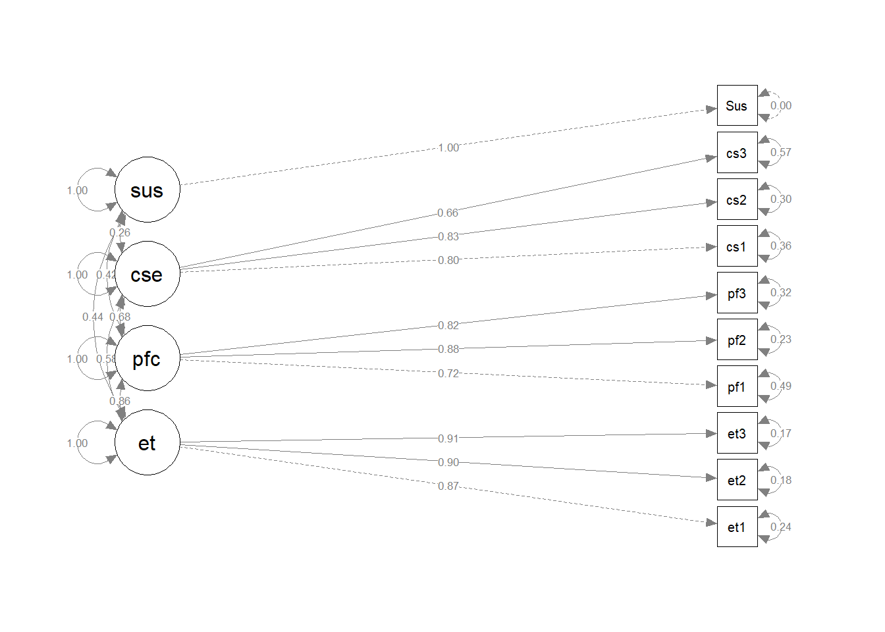

library(here)
library(tidyverse)
library(corrplot)
library(semTools)
library(lavaanPlot)
library(tidySEM)
library(semPlot)
library(ltm)
library(psych)Initiation and Sustenance of Quitting Gambling
Testing Construct Validity
We test the construct validity using the Confirmatory Factor Analysis to show that the instrument is valid across problem and non-problem gamblers. The CFA is related to the measurement side of the Structural Equation Modeling framework and is sufficient in proving instrument validity.
Loading in the Dataset
I am loading the recoded dataset that you provided me into R.
gambling <- read.csv("Gambling behavior among college students_RECODED.csv") |> as_tibble()
gambling <- gambling |> mutate(Gambled = ifelse(GambleD==0,0,1))I introduced a new variable named Gambled, where Gambled=0 corresponds to whether the participant gambled within the past 30 days. Else, Gambled=1.
Summary statistics of the scores
Let’s look at the summary statistics of the scores first.
gambling |> summarize(PA_mean = mean(PA),
PA_sd = sd(PA),
PA_median=as.numeric(quantile(PA,0.5)),
PAD_mean = mean(PAD),
PAD_sd = sd(PAD),
PAD_median=as.numeric(quantile(PAD,0.5)),
PD_mean = mean(PD),
PD_sd = sd(PD),
PD_median=as.numeric(quantile(PD,0.5)),
BC_mean = mean(BC),
BC_sd = sd(BC),
BC_median=as.numeric(quantile(BC,0.5)),
CPE_mean = mean(CPE),
CPE_sd = sd(CPE),
CPE_median=as.numeric(quantile(CPE,0.5)),
ET_mean = mean(ET),
ET_sd = sd(ET),
ET_median=as.numeric(quantile(ET,0.5)),
PfC_mean = mean(PfC),
PfC_sd = sd(PfC),
PfC_median=as.numeric(quantile(PfC,0.5)),
CSE_mean = mean(CSE),
CSE_sd = sd(CSE),
CSE_median=as.numeric(quantile(CSE,0.5)),
Ini_mean = mean(Ini),
Ini_sd = sd(Ini),
Ini_median=as.numeric(quantile(Ini,0.5)),
Sus_mean = mean(Sus),
Sus_sd = sd(PA),
Sus_median=as.numeric(quantile(Sus,0.5))
) |>
pivot_longer(cols=1:30,
names_prefix = c("pa","pad","bc","cpe","Ini",
"et","pfc","cse","Sus"),
names_to= "SummaryStats",
values_to="Values") |>
mutate(Values=round(Values,2)) |> as.data.frame()Warning in gsub(vec_paste0("^", names_prefix), "", cols): argument 'pattern'
has length > 1 and only the first element will be used SummaryStats Values
1 PA_mean 13.75
2 PA_sd 5.83
3 PA_median 15.00
4 PAD_mean 3.92
5 PAD_sd 4.38
6 PAD_median 2.00
7 PD_mean 9.83
8 PD_sd 7.19
9 PD_median 10.00
10 BC_mean 16.01
11 BC_sd 4.49
12 BC_median 17.00
13 CPE_mean 6.93
14 CPE_sd 3.59
15 CPE_median 7.00
16 ET_mean 10.32
17 ET_sd 2.61
18 ET_median 12.00
19 PfC_mean 9.79
20 PfC_sd 2.81
21 PfC_median 11.00
22 CSE_mean 9.19
23 CSE_sd 3.19
24 CSE_median 10.00
25 Ini_mean 3.47
26 Ini_sd 1.09
27 Ini_median 4.00
28 Sus_mean 2.64
29 Sus_sd 5.83
30 Sus_median 3.00Cronbach’s alpha
We calculate Cronbach’s alpha for the responses using the cronbach.alpha() function in the package ltm.
responses <- gambling |>
dplyr::select(starts_with(c("pa","pad","bc","cpe","Ini",
"et","pfc","cse","Sus"),ignore.case=F))
cronbach.alpha(responses,CI=T,standardized = T)
Standardized Cronbach's alpha for the 'responses' data-set
Items: 29
Sample units: 1474
alpha: 0.883
Bootstrap 95% CI based on 1000 samples
2.5% 97.5%
0.871 0.893 Overall Cronbach’s alpha is estimated to be 0.883 (95% CI=(0.872,0.893)) higher than 0.70, which leads us to conclude that the instrument is acceptable.
We then look at the specific Cronbach’s alphas for each construct.
Perceived Advantage
gambling |> dplyr::select(starts_with("pa",ignore.case=F) &!starts_with("pad")) |> alpha()
Reliability analysis
Call: alpha(x = dplyr::select(gambling, starts_with("pa", ignore.case = F) &
!starts_with("pad")))
raw_alpha std.alpha G6(smc) average_r S/N ase mean sd median_r
0.93 0.93 0.92 0.71 12 0.0029 2.7 1.2 0.73
95% confidence boundaries
lower alpha upper
Feldt 0.92 0.93 0.93
Duhachek 0.92 0.93 0.93
Reliability if an item is dropped:
raw_alpha std.alpha G6(smc) average_r S/N alpha se var.r med.r
pa1 0.91 0.91 0.90 0.71 9.9 0.0037 0.0157 0.71
pa2 0.93 0.93 0.92 0.77 13.8 0.0029 0.0039 0.76
pa3 0.89 0.89 0.87 0.68 8.4 0.0043 0.0069 0.69
pa4 0.90 0.90 0.88 0.69 8.8 0.0042 0.0062 0.70
pa5 0.91 0.91 0.90 0.71 9.9 0.0038 0.0102 0.69
Item statistics
n raw.r std.r r.cor r.drop mean sd
pa1 1474 0.88 0.88 0.84 0.81 2.7 1.3
pa2 1474 0.77 0.79 0.71 0.68 3.4 1.1
pa3 1474 0.93 0.93 0.92 0.88 2.7 1.4
pa4 1474 0.92 0.91 0.91 0.87 2.6 1.4
pa5 1474 0.89 0.88 0.84 0.81 2.4 1.5
Non missing response frequency for each item
0 1 2 3 4 miss
pa1 0.11 0.07 0.23 0.23 0.36 0
pa2 0.04 0.03 0.10 0.16 0.66 0
pa3 0.11 0.09 0.22 0.20 0.39 0
pa4 0.12 0.10 0.21 0.18 0.38 0
pa5 0.17 0.10 0.20 0.17 0.35 0Perceived Disadvantage
gambling |> dplyr::select(starts_with("pad",ignore.case=F) ) |> alpha()
Reliability analysis
Call: alpha(x = dplyr::select(gambling, starts_with("pad", ignore.case = F)))
raw_alpha std.alpha G6(smc) average_r S/N ase mean sd median_r
0.88 0.89 0.88 0.61 7.7 0.0049 0.78 0.88 0.66
95% confidence boundaries
lower alpha upper
Feldt 0.87 0.88 0.89
Duhachek 0.87 0.88 0.89
Reliability if an item is dropped:
raw_alpha std.alpha G6(smc) average_r S/N alpha se var.r med.r
pad1 0.90 0.90 0.88 0.70 9.1 0.0044 0.0028 0.68
pad2 0.84 0.85 0.83 0.59 5.7 0.0068 0.0229 0.58
pad3 0.85 0.85 0.82 0.59 5.7 0.0064 0.0127 0.60
pad4 0.84 0.85 0.84 0.59 5.7 0.0068 0.0220 0.60
pad5 0.84 0.85 0.82 0.58 5.5 0.0066 0.0111 0.59
Item statistics
n raw.r std.r r.cor r.drop mean sd
pad1 1474 0.71 0.70 0.57 0.54 1.05 1.10
pad2 1474 0.86 0.86 0.81 0.77 0.83 1.09
pad3 1474 0.84 0.86 0.83 0.76 0.51 0.89
pad4 1474 0.87 0.86 0.81 0.76 0.93 1.21
pad5 1474 0.86 0.87 0.85 0.77 0.60 0.99
Non missing response frequency for each item
0 1 2 3 4 miss
pad1 0.42 0.24 0.24 0.07 0.03 0
pad2 0.55 0.19 0.17 0.06 0.03 0
pad3 0.69 0.16 0.10 0.03 0.02 0
pad4 0.54 0.16 0.16 0.09 0.05 0
pad5 0.66 0.16 0.11 0.04 0.02 0Behavioral Confidence
gambling |> dplyr::select(starts_with("bc",ignore.case=F) ) |> alpha()
Reliability analysis
Call: alpha(x = dplyr::select(gambling, starts_with("bc", ignore.case = F)))
raw_alpha std.alpha G6(smc) average_r S/N ase mean sd median_r
0.9 0.9 0.89 0.65 9.1 0.004 3.2 0.9 0.64
95% confidence boundaries
lower alpha upper
Feldt 0.89 0.9 0.91
Duhachek 0.89 0.9 0.91
Reliability if an item is dropped:
raw_alpha std.alpha G6(smc) average_r S/N alpha se var.r med.r
bc1 0.90 0.90 0.88 0.69 8.9 0.0043 0.0039 0.67
bc2 0.86 0.86 0.84 0.61 6.4 0.0058 0.0049 0.64
bc3 0.86 0.87 0.84 0.62 6.5 0.0055 0.0073 0.62
bc4 0.88 0.88 0.86 0.66 7.6 0.0047 0.0117 0.66
bc5 0.88 0.88 0.86 0.65 7.5 0.0049 0.0045 0.63
Item statistics
n raw.r std.r r.cor r.drop mean sd
bc1 1474 0.75 0.78 0.70 0.66 3.6 0.81
bc2 1474 0.90 0.89 0.87 0.83 3.0 1.15
bc3 1474 0.89 0.89 0.86 0.81 3.3 1.05
bc4 1474 0.83 0.83 0.77 0.73 3.3 1.03
bc5 1474 0.86 0.84 0.79 0.75 2.8 1.24
Non missing response frequency for each item
0 1 2 3 4 miss
bc1 0.01 0.02 0.06 0.16 0.74 0
bc2 0.04 0.08 0.17 0.22 0.49 0
bc3 0.03 0.06 0.11 0.23 0.57 0
bc4 0.02 0.06 0.12 0.19 0.61 0
bc5 0.06 0.10 0.23 0.20 0.41 0Changes in Physical Environment
gambling |> dplyr::select(starts_with("cpe",ignore.case=F) ) |> alpha()
Reliability analysis
Call: alpha(x = dplyr::select(gambling, starts_with("cpe", ignore.case = F)))
raw_alpha std.alpha G6(smc) average_r S/N ase mean sd median_r
0.77 0.77 0.72 0.52 3.3 0.01 2.3 1.2 0.44
95% confidence boundaries
lower alpha upper
Feldt 0.75 0.77 0.79
Duhachek 0.75 0.77 0.79
Reliability if an item is dropped:
raw_alpha std.alpha G6(smc) average_r S/N alpha se var.r med.r
cpe1 0.60 0.61 0.44 0.44 1.5 0.0204 NA 0.44
cpe2 0.56 0.57 0.40 0.40 1.3 0.0223 NA 0.40
cpe3 0.84 0.84 0.73 0.73 5.4 0.0082 NA 0.73
Item statistics
n raw.r std.r r.cor r.drop mean sd
cpe1 1474 0.88 0.86 0.79 0.68 2.1 1.6
cpe2 1474 0.89 0.87 0.82 0.71 1.9 1.5
cpe3 1474 0.71 0.74 0.49 0.45 2.9 1.3
Non missing response frequency for each item
0 1 2 3 4 miss
cpe1 0.26 0.11 0.19 0.14 0.30 0
cpe2 0.26 0.15 0.23 0.15 0.22 0
cpe3 0.08 0.08 0.16 0.24 0.45 0Entire Initiation Scale
gambling |> dplyr::select(starts_with(c("pa","pad","bc","cpe","Ini"),ignore.case=F)) |> alpha()Warning in alpha(dplyr::select(gambling, starts_with(c("pa", "pad", "bc", : Some items were negatively correlated with the total scale and probably
should be reversed.
To do this, run the function again with the 'check.keys=TRUE' optionSome items ( pad1 pad2 pad3 pad4 pad5 ) were negatively correlated with the total scale and
probably should be reversed.
To do this, run the function again with the 'check.keys=TRUE' option
Reliability analysis
Call: alpha(x = dplyr::select(gambling, starts_with(c("pa", "pad",
"bc", "cpe", "Ini"), ignore.case = F)))
raw_alpha std.alpha G6(smc) average_r S/N ase mean sd median_r
0.8 0.8 0.91 0.17 4 0.0073 2.3 0.57 0.15
95% confidence boundaries
lower alpha upper
Feldt 0.79 0.8 0.82
Duhachek 0.79 0.8 0.82
Reliability if an item is dropped:
raw_alpha std.alpha G6(smc) average_r S/N alpha se var.r med.r
pa1 0.78 0.78 0.90 0.16 3.5 0.0082 0.091 0.14
pa2 0.79 0.79 0.90 0.17 3.7 0.0078 0.094 0.15
pa3 0.78 0.78 0.89 0.16 3.5 0.0083 0.090 0.14
pa4 0.78 0.78 0.89 0.16 3.5 0.0083 0.090 0.14
pa5 0.78 0.78 0.89 0.16 3.5 0.0084 0.091 0.14
pad1 0.82 0.81 0.91 0.19 4.3 0.0069 0.087 0.16
pad2 0.81 0.80 0.91 0.19 4.1 0.0070 0.085 0.16
pad3 0.80 0.80 0.90 0.18 3.9 0.0073 0.089 0.16
pad4 0.82 0.81 0.91 0.19 4.2 0.0068 0.083 0.16
pad5 0.80 0.80 0.90 0.18 4.0 0.0072 0.088 0.16
bc1 0.80 0.79 0.90 0.17 3.7 0.0076 0.089 0.13
bc2 0.79 0.78 0.89 0.17 3.6 0.0079 0.087 0.14
bc3 0.79 0.78 0.90 0.17 3.6 0.0078 0.087 0.14
bc4 0.80 0.79 0.90 0.17 3.7 0.0076 0.087 0.14
bc5 0.79 0.78 0.90 0.17 3.6 0.0079 0.089 0.14
cpe1 0.80 0.79 0.90 0.17 3.8 0.0075 0.096 0.15
cpe2 0.80 0.79 0.90 0.17 3.7 0.0077 0.096 0.14
cpe3 0.79 0.78 0.90 0.17 3.6 0.0080 0.090 0.14
Ini 0.80 0.79 0.90 0.17 3.8 0.0077 0.094 0.13
Item statistics
n raw.r std.r r.cor r.drop mean sd
pa1 1474 0.649 0.62 0.613 0.569 2.68 1.32
pa2 1474 0.521 0.51 0.482 0.444 3.37 1.06
pa3 1474 0.678 0.65 0.659 0.601 2.67 1.35
pa4 1474 0.684 0.65 0.662 0.605 2.60 1.40
pa5 1474 0.691 0.66 0.656 0.609 2.43 1.48
pad1 1474 0.084 0.11 0.038 -0.018 1.05 1.10
pad2 1474 0.203 0.23 0.196 0.103 0.83 1.09
pad3 1474 0.298 0.34 0.318 0.220 0.51 0.89
pad4 1474 0.131 0.16 0.123 0.019 0.93 1.21
pad5 1474 0.291 0.33 0.311 0.203 0.60 0.99
bc1 1474 0.448 0.48 0.446 0.385 3.60 0.81
bc2 1474 0.553 0.57 0.566 0.472 3.04 1.15
bc3 1474 0.537 0.56 0.550 0.462 3.26 1.05
bc4 1474 0.446 0.47 0.438 0.364 3.31 1.03
bc5 1474 0.557 0.56 0.551 0.470 2.80 1.24
cpe1 1474 0.481 0.44 0.410 0.357 2.11 1.57
cpe2 1474 0.505 0.47 0.437 0.392 1.93 1.48
cpe3 1474 0.578 0.57 0.538 0.492 2.89 1.27
Ini 1474 0.454 0.46 0.407 0.369 3.47 1.09
Non missing response frequency for each item
0 1 2 3 4 miss
pa1 0.11 0.07 0.23 0.23 0.36 0
pa2 0.04 0.03 0.10 0.16 0.66 0
pa3 0.11 0.09 0.22 0.20 0.39 0
pa4 0.12 0.10 0.21 0.18 0.38 0
pa5 0.17 0.10 0.20 0.17 0.35 0
pad1 0.42 0.24 0.24 0.07 0.03 0
pad2 0.55 0.19 0.17 0.06 0.03 0
pad3 0.69 0.16 0.10 0.03 0.02 0
pad4 0.54 0.16 0.16 0.09 0.05 0
pad5 0.66 0.16 0.11 0.04 0.02 0
bc1 0.01 0.02 0.06 0.16 0.74 0
bc2 0.04 0.08 0.17 0.22 0.49 0
bc3 0.03 0.06 0.11 0.23 0.57 0
bc4 0.02 0.06 0.12 0.19 0.61 0
bc5 0.06 0.10 0.23 0.20 0.41 0
cpe1 0.26 0.11 0.19 0.14 0.30 0
cpe2 0.26 0.15 0.23 0.15 0.22 0
cpe3 0.08 0.08 0.16 0.24 0.45 0
Ini 0.05 0.03 0.06 0.11 0.75 0Emotional Transformation
gambling |> dplyr::select(starts_with("et",ignore.case=F) ) |> alpha()
Reliability analysis
Call: alpha(x = dplyr::select(gambling, starts_with("et", ignore.case = F)))
raw_alpha std.alpha G6(smc) average_r S/N ase mean sd median_r
0.92 0.92 0.89 0.8 12 0.0035 3.4 0.87 0.81
95% confidence boundaries
lower alpha upper
Feldt 0.91 0.92 0.93
Duhachek 0.91 0.92 0.93
Reliability if an item is dropped:
raw_alpha std.alpha G6(smc) average_r S/N alpha se var.r med.r
et1 0.91 0.91 0.84 0.84 10.2 0.0047 NA 0.84
et2 0.86 0.87 0.77 0.77 6.5 0.0070 NA 0.77
et3 0.89 0.89 0.81 0.81 8.3 0.0057 NA 0.81
Item statistics
n raw.r std.r r.cor r.drop mean sd
et1 1474 0.93 0.92 0.85 0.82 3.4 1.01
et2 1474 0.94 0.94 0.91 0.87 3.5 0.89
et3 1474 0.93 0.93 0.88 0.84 3.5 0.91
Non missing response frequency for each item
0 1 2 3 4 miss
et1 0.03 0.04 0.11 0.19 0.63 0
et2 0.02 0.02 0.08 0.19 0.68 0
et3 0.02 0.03 0.09 0.18 0.68 0Practice for Change
gambling |> dplyr::select(starts_with("pfc",ignore.case=F) ) |> alpha()
Reliability analysis
Call: alpha(x = dplyr::select(gambling, starts_with("pfc", ignore.case = F)))
raw_alpha std.alpha G6(smc) average_r S/N ase mean sd median_r
0.83 0.85 0.8 0.65 5.6 0.0076 3.3 0.94 0.62
95% confidence boundaries
lower alpha upper
Feldt 0.82 0.83 0.85
Duhachek 0.82 0.83 0.85
Reliability if an item is dropped:
raw_alpha std.alpha G6(smc) average_r S/N alpha se var.r med.r
pfc1 0.87 0.87 0.77 0.77 6.5 0.0069 NA 0.77
pfc2 0.71 0.72 0.57 0.57 2.6 0.0145 NA 0.57
pfc3 0.75 0.77 0.62 0.62 3.3 0.0123 NA 0.62
Item statistics
n raw.r std.r r.cor r.drop mean sd
pfc1 1474 0.86 0.83 0.68 0.63 3.1 1.26
pfc2 1474 0.89 0.91 0.86 0.77 3.4 0.95
pfc3 1474 0.87 0.89 0.82 0.72 3.3 1.00
Non missing response frequency for each item
0 1 2 3 4 miss
pfc1 0.08 0.06 0.13 0.18 0.56 0
pfc2 0.02 0.04 0.12 0.22 0.61 0
pfc3 0.02 0.04 0.12 0.20 0.61 0Overall sustenance
gambling |> dplyr::select(starts_with(c("et","pfc","cse","Sus"),ignore.case=F)) |> alpha()
Reliability analysis
Call: alpha(x = dplyr::select(gambling, starts_with(c("et", "pfc",
"cse", "Sus"), ignore.case = F)))
raw_alpha std.alpha G6(smc) average_r S/N ase mean sd median_r
0.89 0.9 0.92 0.49 9.5 0.0044 3.2 0.81 0.43
95% confidence boundaries
lower alpha upper
Feldt 0.88 0.89 0.9
Duhachek 0.88 0.89 0.9
Reliability if an item is dropped:
raw_alpha std.alpha G6(smc) average_r S/N alpha se var.r med.r
et1 0.87 0.89 0.91 0.47 8.0 0.0051 0.025 0.43
et2 0.87 0.89 0.90 0.47 7.9 0.0051 0.023 0.43
et3 0.87 0.89 0.90 0.47 7.8 0.0051 0.024 0.42
pfc1 0.88 0.90 0.91 0.49 8.6 0.0050 0.031 0.43
pfc2 0.87 0.89 0.90 0.47 7.8 0.0052 0.025 0.43
pfc3 0.87 0.89 0.91 0.47 8.1 0.0051 0.027 0.43
cse1 0.88 0.90 0.91 0.50 8.9 0.0048 0.029 0.44
cse2 0.88 0.90 0.91 0.49 8.8 0.0049 0.029 0.42
cse3 0.89 0.90 0.92 0.51 9.5 0.0045 0.027 0.45
Sus 0.90 0.91 0.93 0.53 10.2 0.0040 0.022 0.48
Item statistics
n raw.r std.r r.cor r.drop mean sd
et1 1474 0.79 0.81 0.80 0.73 3.4 1.01
et2 1474 0.81 0.83 0.84 0.76 3.5 0.89
et3 1474 0.81 0.84 0.84 0.77 3.5 0.91
pfc1 1474 0.73 0.72 0.68 0.65 3.1 1.26
pfc2 1474 0.82 0.84 0.83 0.77 3.4 0.95
pfc3 1474 0.78 0.80 0.78 0.72 3.3 1.00
cse1 1474 0.70 0.68 0.65 0.60 3.2 1.23
cse2 1474 0.71 0.70 0.67 0.63 3.2 1.17
cse3 1474 0.63 0.60 0.53 0.51 2.9 1.36
Sus 1474 0.55 0.52 0.42 0.40 2.6 1.47
Non missing response frequency for each item
0 1 2 3 4 miss
et1 0.03 0.04 0.11 0.19 0.63 0
et2 0.02 0.02 0.08 0.19 0.68 0
et3 0.02 0.03 0.09 0.18 0.68 0
pfc1 0.08 0.06 0.13 0.18 0.56 0
pfc2 0.02 0.04 0.12 0.22 0.61 0
pfc3 0.02 0.04 0.12 0.20 0.61 0
cse1 0.07 0.05 0.12 0.16 0.59 0
cse2 0.05 0.06 0.14 0.18 0.57 0
cse3 0.09 0.09 0.18 0.15 0.49 0
Sus 0.16 0.08 0.14 0.22 0.41 0CFA and SEM Analysis
Initiation of quitting gambling
We now check for correlations between the items for initiation of quitting gambling.
# #| echo: false
cormat <- gambling |>
dplyr::select(starts_with(c("pa","pad","bc","cpe","Ini"),ignore.case=F)) |> cor()
corrplot(cormat)We now use the lavaan package to estimate a multi-group CFA by grouping each construct.
inimod <- 'pa =~ pa1 + pa2 +pa3 + pa4 + pa5
pad =~ pad1 + pad2 + pad3 + pad4 + pad5
bc =~ bc1 + bc2 + bc3 + bc4 + bc5
cpe =~ cpe1 + cpe2 + cpe3
ini=~ Ini'
CFAfit_ini <- cfa(inimod,data=gambling,
estimator="WLSMV")
CFAfit_ini |> summary(fit.measures=T,standardized=T)lavaan 0.6.15 ended normally after 57 iterations
Estimator DWLS
Optimization method NLMINB
Number of model parameters 47
Number of observations 1474
Model Test User Model:
Standard Scaled
Test Statistic 1011.032 1463.511
Degrees of freedom 143 143
P-value (Chi-square) 0.000 0.000
Scaling correction factor 0.724
Shift parameter 66.447
simple second-order correction
Model Test Baseline Model:
Test statistic 20389.248 6423.736
Degrees of freedom 171 171
P-value 0.000 0.000
Scaling correction factor 3.234
User Model versus Baseline Model:
Comparative Fit Index (CFI) 0.957 0.789
Tucker-Lewis Index (TLI) 0.949 0.747
Robust Comparative Fit Index (CFI) 0.953
Robust Tucker-Lewis Index (TLI) 0.943
Root Mean Square Error of Approximation:
RMSEA 0.064 0.079
90 Percent confidence interval - lower 0.060 0.076
90 Percent confidence interval - upper 0.068 0.083
P-value H_0: RMSEA <= 0.050 0.000 0.000
P-value H_0: RMSEA >= 0.080 0.000 0.361
Robust RMSEA 0.067
90 Percent confidence interval - lower 0.064
90 Percent confidence interval - upper 0.071
P-value H_0: Robust RMSEA <= 0.050 0.000
P-value H_0: Robust RMSEA >= 0.080 0.000
Standardized Root Mean Square Residual:
SRMR 0.064 0.064
Parameter Estimates:
Standard errors Robust.sem
Information Expected
Information saturated (h1) model Unstructured
Latent Variables:
Estimate Std.Err z-value P(>|z|) Std.lv Std.all
pa =~
pa1 1.000 1.092 0.829
pa2 0.645 0.026 24.666 0.000 0.705 0.662
pa3 1.136 0.026 43.911 0.000 1.240 0.917
pa4 1.169 0.027 43.403 0.000 1.277 0.913
pa5 1.197 0.029 40.703 0.000 1.307 0.882
pad =~
pad1 1.000 0.704 0.639
pad2 1.345 0.067 20.128 0.000 0.946 0.865
pad3 0.879 0.053 16.638 0.000 0.619 0.692
pad4 1.560 0.079 19.784 0.000 1.097 0.905
pad5 1.013 0.059 17.059 0.000 0.712 0.717
bc =~
bc1 1.000 0.597 0.740
bc2 1.648 0.072 22.885 0.000 0.983 0.852
bc3 1.490 0.062 23.869 0.000 0.889 0.848
bc4 1.368 0.061 22.291 0.000 0.816 0.794
bc5 1.656 0.087 18.977 0.000 0.988 0.796
cpe =~
cpe1 1.000 0.883 0.563
cpe2 0.986 0.042 23.321 0.000 0.871 0.588
cpe3 1.417 0.080 17.751 0.000 1.252 0.985
ini =~
Ini 1.000 1.087 1.000
Covariances:
Estimate Std.Err z-value P(>|z|) Std.lv Std.all
pa ~~
pad 0.033 0.020 1.659 0.097 0.043 0.043
bc 0.152 0.022 7.002 0.000 0.234 0.234
cpe 0.246 0.034 7.317 0.000 0.255 0.255
ini 0.368 0.037 9.848 0.000 0.310 0.310
pad ~~
bc -0.147 0.016 -9.089 0.000 -0.351 -0.351
cpe -0.102 0.020 -5.018 0.000 -0.165 -0.165
ini -0.182 0.025 -7.257 0.000 -0.238 -0.238
bc ~~
cpe 0.308 0.027 11.580 0.000 0.584 0.584
ini 0.295 0.032 9.152 0.000 0.456 0.456
cpe ~~
ini 0.353 0.036 9.691 0.000 0.368 0.368
Variances:
Estimate Std.Err z-value P(>|z|) Std.lv Std.all
.pa1 0.543 0.036 15.175 0.000 0.543 0.313
.pa2 0.636 0.033 19.002 0.000 0.636 0.562
.pa3 0.290 0.028 10.503 0.000 0.290 0.159
.pa4 0.325 0.033 9.785 0.000 0.325 0.166
.pa5 0.485 0.045 10.669 0.000 0.485 0.221
.pad1 0.718 0.047 15.356 0.000 0.718 0.592
.pad2 0.300 0.034 8.792 0.000 0.300 0.251
.pad3 0.417 0.031 13.577 0.000 0.417 0.522
.pad4 0.265 0.046 5.815 0.000 0.265 0.181
.pad5 0.480 0.037 13.096 0.000 0.480 0.486
.bc1 0.294 0.025 11.654 0.000 0.294 0.453
.bc2 0.364 0.029 12.654 0.000 0.364 0.273
.bc3 0.308 0.024 12.707 0.000 0.308 0.280
.bc4 0.391 0.027 14.460 0.000 0.391 0.370
.bc5 0.563 0.039 14.437 0.000 0.563 0.366
.cpe1 1.684 0.062 27.329 0.000 1.684 0.683
.cpe2 1.436 0.054 26.469 0.000 1.436 0.654
.cpe3 0.048 0.069 0.691 0.490 0.048 0.030
.Ini 0.000 0.000 0.000
pa 1.192 0.062 19.338 0.000 1.000 1.000
pad 0.495 0.045 11.120 0.000 1.000 1.000
bc 0.356 0.036 10.009 0.000 1.000 1.000
cpe 0.780 0.065 11.936 0.000 1.000 1.000
ini 1.181 0.072 16.423 0.000 1.000 1.000semPaths(CFAfit_ini,what="diagram","std",layout="tree", rotation=2)
semPaths(CFAfit_ini,what="diagram","std",layout="tree",
filetype="png",
filename="CFA_ini",
width=12,
height=9,
rotation=2)Output stored in C:/Users/migsf/Documents/GitHub/GamblingAddiction/CFA_ini.pngThe important fit measures are the following: RMSEA, SRMR, and CFI. We interpret the Robust RMSEA and CFI estimates to account for the Weighted Least Squares with Mean and Variance Adjustments (WLSMV) estimator.
For an accetable fit, the following conditions should be satisfied: RMSEA values of \(\leq\) 0.06, CFI values close to 1, and SRMR values less than 0.10. The overall model seems to satisfy the CFI and SRMR criteria, but not the RMSEA. However, there are some sources that say that RMSEA below 0.10 is still acceptable.
The matrix that shows the factor loadings are shown below in the lambda matrix
CFAfit_ini |> lavaan::inspect(what="std")$lambda
pa pad bc cpe ini
pa1 0.829 0.000 0.000 0.000 0
pa2 0.662 0.000 0.000 0.000 0
pa3 0.917 0.000 0.000 0.000 0
pa4 0.913 0.000 0.000 0.000 0
pa5 0.882 0.000 0.000 0.000 0
pad1 0.000 0.639 0.000 0.000 0
pad2 0.000 0.865 0.000 0.000 0
pad3 0.000 0.692 0.000 0.000 0
pad4 0.000 0.905 0.000 0.000 0
pad5 0.000 0.717 0.000 0.000 0
bc1 0.000 0.000 0.740 0.000 0
bc2 0.000 0.000 0.852 0.000 0
bc3 0.000 0.000 0.848 0.000 0
bc4 0.000 0.000 0.794 0.000 0
bc5 0.000 0.000 0.796 0.000 0
cpe1 0.000 0.000 0.000 0.563 0
cpe2 0.000 0.000 0.000 0.588 0
cpe3 0.000 0.000 0.000 0.985 0
Ini 0.000 0.000 0.000 0.000 1
$theta
pa1 pa2 pa3 pa4 pa5 pad1 pad2 pad3 pad4 pad5 bc1 bc2
pa1 0.313
pa2 0.000 0.562
pa3 0.000 0.000 0.159
pa4 0.000 0.000 0.000 0.166
pa5 0.000 0.000 0.000 0.000 0.221
pad1 0.000 0.000 0.000 0.000 0.000 0.592
pad2 0.000 0.000 0.000 0.000 0.000 0.000 0.251
pad3 0.000 0.000 0.000 0.000 0.000 0.000 0.000 0.522
pad4 0.000 0.000 0.000 0.000 0.000 0.000 0.000 0.000 0.181
pad5 0.000 0.000 0.000 0.000 0.000 0.000 0.000 0.000 0.000 0.486
bc1 0.000 0.000 0.000 0.000 0.000 0.000 0.000 0.000 0.000 0.000 0.453
bc2 0.000 0.000 0.000 0.000 0.000 0.000 0.000 0.000 0.000 0.000 0.000 0.273
bc3 0.000 0.000 0.000 0.000 0.000 0.000 0.000 0.000 0.000 0.000 0.000 0.000
bc4 0.000 0.000 0.000 0.000 0.000 0.000 0.000 0.000 0.000 0.000 0.000 0.000
bc5 0.000 0.000 0.000 0.000 0.000 0.000 0.000 0.000 0.000 0.000 0.000 0.000
cpe1 0.000 0.000 0.000 0.000 0.000 0.000 0.000 0.000 0.000 0.000 0.000 0.000
cpe2 0.000 0.000 0.000 0.000 0.000 0.000 0.000 0.000 0.000 0.000 0.000 0.000
cpe3 0.000 0.000 0.000 0.000 0.000 0.000 0.000 0.000 0.000 0.000 0.000 0.000
Ini 0.000 0.000 0.000 0.000 0.000 0.000 0.000 0.000 0.000 0.000 0.000 0.000
bc3 bc4 bc5 cpe1 cpe2 cpe3 Ini
pa1
pa2
pa3
pa4
pa5
pad1
pad2
pad3
pad4
pad5
bc1
bc2
bc3 0.280
bc4 0.000 0.370
bc5 0.000 0.000 0.366
cpe1 0.000 0.000 0.000 0.683
cpe2 0.000 0.000 0.000 0.000 0.654
cpe3 0.000 0.000 0.000 0.000 0.000 0.030
Ini 0.000 0.000 0.000 0.000 0.000 0.000 0.000
$psi
pa pad bc cpe ini
pa 1.000
pad 0.043 1.000
bc 0.234 -0.351 1.000
cpe 0.255 -0.165 0.584 1.000
ini 0.310 -0.238 0.456 0.368 1.000Construct Validity (Convergent and Discriminant Validity)
We check convergent and discriminant validity by looking at the AVE (average variance extracted) for convergent validity and CR (composite reliability) for discriminant validity.
CFAfit_ini |> compRelSEM() pa pad bc cpe
0.928 0.867 0.905 0.701 CFAfit_ini |> semTools::reliability() pa pad bc cpe
alpha 0.9251719 0.8807793 0.8983117 0.7701384
omega 0.9326725 0.8840933 0.9048613 0.7404453
omega2 0.9326725 0.8840933 0.9048613 0.7404453
omega3 0.9280533 0.8671547 0.9052186 0.7008800
avevar 0.7421940 0.6151151 0.6617169 0.4950705CFAfit_ini |> AVE() pa pad bc cpe
0.742 0.615 0.662 0.495 Sustenance of quitting gambling
We now check for correlations between the items for sustenance of quitting gambling.
cormat <- gambling |>
dplyr::select(starts_with(c("et","pfc","cse","Sus"),ignore.case=F)) |> cor()
corrplot(cormat)
We now use the lavaan package to estimate a multi-group CFA by grouping each construct.
susmod <- 'et =~ et1 + et2 + et3
pfc =~ pfc1 + pfc2 + pfc3
cse =~ cse1 + cse2 + cse3
sus=~ Sus'
CFAfit <- cfa(susmod,data=gambling,estimator="WLSMV")
CFAfit |> summary(fit.measures=T, standardized=T)lavaan 0.6.15 ended normally after 38 iterations
Estimator DWLS
Optimization method NLMINB
Number of model parameters 25
Number of observations 1474
Model Test User Model:
Standard Scaled
Test Statistic 28.015 123.325
Degrees of freedom 30 30
P-value (Chi-square) 0.570 0.000
Scaling correction factor 0.244
Shift parameter 8.331
simple second-order correction
Model Test Baseline Model:
Test statistic 8036.939 2188.391
Degrees of freedom 45 45
P-value 0.000 0.000
Scaling correction factor 3.729
User Model versus Baseline Model:
Comparative Fit Index (CFI) 1.000 0.956
Tucker-Lewis Index (TLI) 1.000 0.935
Robust Comparative Fit Index (CFI) 0.997
Robust Tucker-Lewis Index (TLI) 0.996
Root Mean Square Error of Approximation:
RMSEA 0.000 0.046
90 Percent confidence interval - lower 0.000 0.038
90 Percent confidence interval - upper 0.018 0.055
P-value H_0: RMSEA <= 0.050 1.000 0.773
P-value H_0: RMSEA >= 0.080 0.000 0.000
Robust RMSEA 0.023
90 Percent confidence interval - lower 0.019
90 Percent confidence interval - upper 0.027
P-value H_0: Robust RMSEA <= 0.050 1.000
P-value H_0: Robust RMSEA >= 0.080 0.000
Standardized Root Mean Square Residual:
SRMR 0.025 0.025
Parameter Estimates:
Standard errors Robust.sem
Information Expected
Information saturated (h1) model Unstructured
Latent Variables:
Estimate Std.Err z-value P(>|z|) Std.lv Std.all
et =~
et1 1.000 0.881 0.872
et2 0.908 0.025 36.886 0.000 0.800 0.903
et3 0.937 0.029 32.602 0.000 0.826 0.909
pfc =~
pfc1 1.000 0.906 0.717
pfc2 0.926 0.032 29.150 0.000 0.839 0.880
pfc3 0.909 0.033 27.563 0.000 0.824 0.823
cse =~
cse1 1.000 0.988 0.801
cse2 0.986 0.035 28.590 0.000 0.974 0.834
cse3 0.908 0.043 20.903 0.000 0.897 0.659
sus =~
Sus 1.000 1.465 1.000
Covariances:
Estimate Std.Err z-value P(>|z|) Std.lv Std.all
et ~~
pfc 0.684 0.041 16.494 0.000 0.857 0.857
cse 0.509 0.040 12.740 0.000 0.585 0.585
sus 0.566 0.041 13.874 0.000 0.438 0.438
pfc ~~
cse 0.606 0.041 14.610 0.000 0.677 0.677
sus 0.561 0.042 13.437 0.000 0.423 0.423
cse ~~
sus 0.371 0.046 8.087 0.000 0.256 0.256
Variances:
Estimate Std.Err z-value P(>|z|) Std.lv Std.all
.et1 0.245 0.027 9.087 0.000 0.245 0.240
.et2 0.145 0.016 9.213 0.000 0.145 0.185
.et3 0.144 0.016 8.760 0.000 0.144 0.174
.pfc1 0.776 0.053 14.621 0.000 0.776 0.486
.pfc2 0.205 0.020 10.451 0.000 0.205 0.226
.pfc3 0.323 0.032 10.017 0.000 0.323 0.322
.cse1 0.545 0.051 10.656 0.000 0.545 0.359
.cse2 0.416 0.045 9.205 0.000 0.416 0.305
.cse3 1.047 0.066 15.968 0.000 1.047 0.566
.Sus 0.000 0.000 0.000
et 0.777 0.050 15.683 0.000 1.000 1.000
pfc 0.821 0.053 15.431 0.000 1.000 1.000
cse 0.976 0.067 14.560 0.000 1.000 1.000
sus 2.147 0.058 36.781 0.000 1.000 1.000semPaths(CFAfit,"std",what="diagram",layout="tree", rotation=2)
semPaths(CFAfit,"std",what="diagram",layout="tree",
filetype="png",
filename="CFA_sus",
width=12,
height=9,
rotation=2)Output stored in C:/Users/migsf/Documents/GitHub/GamblingAddiction/CFA_sus.pngAll fit measures indicate a good fit, with the CLI close to 1, RMSEA < 0.06, and SRMR < 0.05.
The matrix that shows the factor loadings are shown below in the lambda matrix
CFAfit |> lavaan::inspect(what="std")$lambda
et pfc cse sus
et1 0.872 0.000 0.000 0
et2 0.903 0.000 0.000 0
et3 0.909 0.000 0.000 0
pfc1 0.000 0.717 0.000 0
pfc2 0.000 0.880 0.000 0
pfc3 0.000 0.823 0.000 0
cse1 0.000 0.000 0.801 0
cse2 0.000 0.000 0.834 0
cse3 0.000 0.000 0.659 0
Sus 0.000 0.000 0.000 1
$theta
et1 et2 et3 pfc1 pfc2 pfc3 cse1 cse2 cse3 Sus
et1 0.240
et2 0.000 0.185
et3 0.000 0.000 0.174
pfc1 0.000 0.000 0.000 0.486
pfc2 0.000 0.000 0.000 0.000 0.226
pfc3 0.000 0.000 0.000 0.000 0.000 0.322
cse1 0.000 0.000 0.000 0.000 0.000 0.000 0.359
cse2 0.000 0.000 0.000 0.000 0.000 0.000 0.000 0.305
cse3 0.000 0.000 0.000 0.000 0.000 0.000 0.000 0.000 0.566
Sus 0.000 0.000 0.000 0.000 0.000 0.000 0.000 0.000 0.000 0.000
$psi
et pfc cse sus
et 1.000
pfc 0.857 1.000
cse 0.585 0.677 1.000
sus 0.438 0.423 0.256 1.000Construct Validity (Convergent and Discriminant Validity)
We check convergent and discriminant validity by looking at the AVE (average variance extracted) for convergent validity and CR (composite reliability) for discriminant validity.
CFAfit |> compRelSEM() et pfc cse
0.921 0.835 0.802 CFAfit |> semTools::reliability() et pfc cse
alpha 0.9215844 0.8341404 0.8023436
omega 0.9217674 0.8349993 0.8027466
omega2 0.9217674 0.8349993 0.8027466
omega3 0.9208446 0.8351677 0.8023924
avevar 0.7973230 0.6282236 0.5760814CFAfit |> AVE() et pfc cse
0.797 0.628 0.576 T-test for different items
gambling |>
summarize_at(vars(pa1:Sus),
list(pvalue=~t.test(.~Gambled)$p.value)) |>
pivot_longer(cols=ends_with("value"),
names_to = "Item",
values_to = "p.value") |>
mutate(p.value=round(p.value,3)) |>
as.data.frame() Item p.value
1 pa1_pvalue 0.000
2 pa2_pvalue 0.000
3 pa3_pvalue 0.000
4 pa4_pvalue 0.000
5 pa5_pvalue 0.000
6 PA_pvalue 0.000
7 pad1_pvalue 0.000
8 pad2_pvalue 0.000
9 pad3_pvalue 0.398
10 pad4_pvalue 0.000
11 pad5_pvalue 0.698
12 PAD_pvalue 0.000
13 PD_pvalue 0.000
14 bc1_pvalue 0.000
15 bc2_pvalue 0.000
16 bc3_pvalue 0.000
17 bc4_pvalue 0.000
18 bc5_pvalue 0.000
19 BC_pvalue 0.000
20 cpe1_pvalue 0.126
21 cpe2_pvalue 0.000
22 cpe3_pvalue 0.000
23 CPE_pvalue 0.000
24 et1_pvalue 0.000
25 et2_pvalue 0.000
26 et3_pvalue 0.000
27 ET_pvalue 0.000
28 pfc1_pvalue 0.000
29 pfc2_pvalue 0.000
30 pfc3_pvalue 0.000
31 PfC_pvalue 0.000
32 cse1_pvalue 0.000
33 cse2_pvalue 0.000
34 cse3_pvalue 0.001
35 CSE_pvalue 0.000
36 Ini_pvalue 0.000
37 Sus_pvalue 0.000Conclusions
We have established construct validity for our instrument as used in this data set. All Cronbach \(\alpha\)’s were calculated to be above 0.7, and the composite reliability values were all above 0.7 as well. Convergent validity was also shown by the average variance explained (AVE) where all of the AVE values were above 0.5.